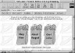

|
|
Previous | Table of Contents | Next
Page 59
Characteristics of Digital Products
and Processes
As the Internet progresses beyond merely being an efficient
communications medium and truly expands the opportunity for trading goods, the very
def-inition and basic characteristics of products will change in this
electronic marketplace. Information is commonly thought of as the new commodity
for electronic commerce. Information, which is often loosely defined to
include software and so-called "edutainment" products as well as other
knowledge-based products that can be digitized and delivered via networks, has
received the most attention in the public press. However, information, even in
its broadest sense, is far from the only product that can be digitized. Many
physical products can be made "smart" by adding an electronic interface to
monitor and control their functions, for example, smart cars and smart
appliances, which become hybrid digital products. Other examples are electronic
currencies and various forms of financial instruments and securities. Even
market processes are being digitized. For example, instead of driving to stores,
consumers visit web stores. Messages containing price quotes and orders sent
over the Internet can, indeed, be considered to be digital products which
perform the same functions as advertising and ordering in physical markets.
Page 60
In light of this far broader scope of possibilities, in this chapter,
properties and characteristics of digital products are defined. Various types of
digital products in terms of usage and valuation are discussed. Next, an
examination of three physical characteristics of digital products that distinguish them
from their non-digital counterparts and that define the unique opportunities
(and challenges) of electronic commerce is given. Finally, a new taxonomy of
digital product types based on user-product interactions is presented. This
taxonomy will facilitate production and marketing decisions for the sellers, as will
become apparent throughout our analyses in later chapters.
Even a few random examples illustrate that virtually any product can be
sold electronically using the Internet as an advanced communications medium
for marketing and advertising, purchasing, and payments. Large corporations
to family-owned and neighborhood shops have set up online storefronts
selling everything from flowers (Virtual Flowers
(http://www.virtualflowers.com/))
to salsa (Bueno Foods
(http://www.buenofoods.com/)). In fact, a full range
of easy-to-use software has been available for some time through vendors
like Open Market
(http://www.openmarket.com/) that help businesses to set up
an electronic shop. Electronic shopping can offer more than just
convenient ordering. For example, when shopping groceries online through
Peapod
(http://www.peapod.com), shown in figure 2.1, you can search, compare,
substitute, sort, and categorize your purchases using information on brands,
prices, nutritional contents, and size. Peapod takes advantage of the
computational power of the electronic marketplace to offer its customers convenience as
well as personalized, planned, economic shopping. Once a customer's
product choices are recorded and analyzed over a period of time, online
shopping services can offer inventory and automated refill recommendations, as well
as targeted advertisements and promotions. Such an integrated shopping
experience is indeed a digital service made possible in the electronic marketplace.
Page 61

Figure 2.1 Peapod Homepage
(http://www.peapod.com/)
Although selling physical products on the Internet is the main goal
of Peapod and many online businesses, their process innovations are at the core
of electronic commerce. For businesses selling physical products online,
their focus has been on improving the efficiency of business transactions or
on enhancing their services to improve market share, but innovative thinking
can transform many physical products and processes into digital products.
Information is a primary example of a digital product, for example
knowledge-based goods that can be digitized and transferred over a
digital network. Information goods include a wide range of traditionally
paper-based products such as books, magazines, newspapers, journals, photographs,
maps, and other graphics. Most of these products are first produced in digital
format and then printed on paper. Some information products such as
databases, computer software, and computer games are distributed and used in
digital format. Since video and audio signals can now be digitized, multimedia
products, such as movies, television programs, and sound recordings can be
combined with information products or sold separately as entertainment
products. Clearly, these are all transparent examples of products that exist as
physical products but that can easily be digitized for the electronic marketplace.
Page 62
We can, however, take this process one step further. Anything that one
can send and receive over the Internet has the potential to be a digital product.
Just think of all the things you can send in an email message—letters and
postcards, news, instructions, credit card information, product inquiries, and
so on. Paper-based products of all kinds can become digital products by
scanning or by changing, conceptually, the way we use those products. For
example, airline, concert or baseball tickets need not be printed on paper. Instead,
a ticket—or the authorization for entry—can be assigned, transferred,
and stored digitally in a person's ID card. To make a reservation, one can log on
to a web site, and make payments digitally. The ticket is then downloaded
into the customer's storing device, which is scanned when boarding an airplane
or entering a sports venue.
Similarly, business and government forms that we fill out every day can
be digitized in their entirety. Instead of simply viewing information about
a government service on web pages, you could easily fill out a request form
for public assistance and receive, for example, welfare payments deposited
digitally on an electronic card or hard drive. Tax returns may be disbursed
electronically, completely digitizing the whole process—maintaining expense
records, calculating tax liabilities, submitting electronic filing, and paying taxes
or getting refunds. Some non-paper objects can also be digitized.
Museums routinely collect, describe, and catalog their collection using databases,
photographs, and sounds. Virtual museums could digitize these materials and
offer them on the Internet, reaching a far larger population (see Internet
Resources at the end of this chapter for an example). When art objects themselves
are digital pictures and photographs, museums may be more virtual than
physical, and the commerce of such objects includes the right to digitize them, and
thus the ability to control the content of the Internet for which Microsoft and
other companies are prepared to pay a large sum of money.
Some products or services do not have a corresponding physical form
but exist as a knowledge base or a process. This does not mean they cannot
be turned into digital products. Take, for example, a salesperson in a
clothing store who has considerable expertise and knowledge of fabrics, sizes,
and
Previous | Table of Contents | Next
|


){kind=link}